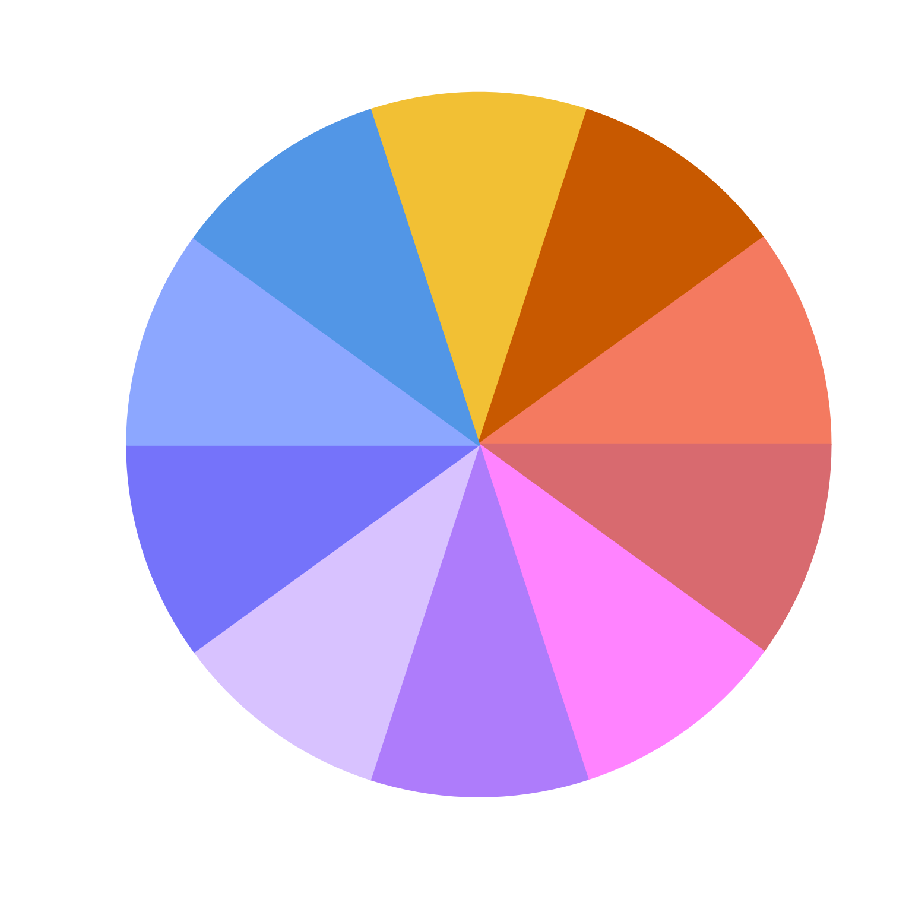

Add colorjam hue warp preset
add_colorjam_preset(
preset,
h1,
h2 = NULL,
direction = 1,
default_step = NULL,
description = NULL,
verbose = TRUE,
...
)character string with the preset name.
numeric vectors of equal length, or NULL to
remove an existing preset.
numeric with one of two accepted values:
1: (default) indicating forward (increasing, clockwise)
progression around the color wheel
-1: indicating reverse
(decreasing, counter-clockwise) progression around the color
wheel.
character string indicating the recommended
step from colorjam_steps().
character with optional text description of
the preset. The description will be added as an attribute:
attr(x, "description")
additional arguments are ignored.
TRUE, invisibly.
The colorjam presets represent customized color wheels, used for various color operations.
h1 contains actual color hue values, with range c(0, 360).
Its values are intended to be used in HCL color hue operations,
such as jamba::hcl2col(), or colorspace::polarLUV(). These
are not equal to HSV or HLS (also known as HSL) color hues,
although colorjam preset could be used to convert from HCL to HSV.
h2 contains virtual color hue values, with range c(0, 360).
These values are intended to represent the full virtual color
wheel, mapping the virtual hue h2 to actual hue h1.
Not all values in h1 need be represented, in fact "dichromat"
presets explicitly remove a sizable chunk of green color hues.
direction the direction of h1 relative to h2 encoded as:
1 for forward direction, and
-1 for reverse direction.
default_step used primarily by rainbowJam() to define the
appropriate Chroma/Luminance stepping pattern when choosing
actual HCL colors around the color wheel.
optional attribute "description" as attr(x, "description").
Other colorjam hue warp:
add_colorjam_step(),
adjust_hue_warp(),
approx_degrees(),
colorjam_presets(),
colorjam_steps(),
display_degrees(),
h2hwOptions(),
h2hw(),
hcl_to_hsl_hue(),
hsl_to_hcl_hue(),
hw2h(),
mean_angle(),
plot_colorjam_preset(),
remap_colorjam_preset(),
validate_colorjam_preset()
h1 <- c(8, 30, 65,
120, 200, 240,
260, 280, 330)
h2 <- c(115, 35.9, -3.7,
-3.7, -3.7, -3.7,
-70.9, -189.6, -229.2)
add_colorjam_preset("custom_dichromat",
h1=h1, h2=h2, direction=-1, default_step="v24",
description="Custom dichromat example")
#> ℹ added preset 'custom_dichromat'.
# behold the new preset name appears
colorjam_presets()
#> [1] "custom_dichromat" "dichromat" "dichromat2" "hcl_to_hsl"
#> [5] "none" "rgb" "rgb2" "ryb"
#> [9] "ryb2"
# the preset data is available
colorjam_presets("custom_dichromat")
#> $h1
#> [1] 30 8 330 280 260 240 200 120 65
#>
#> $h2
#> [1] 35.9 115.0 130.8 170.4 289.1 356.3 356.3 356.3 356.3
#>
#> $direction
#> [1] -1
#>
#> $default_step
#> [1] "v24"
#>
#> attr(,"description")
#> [1] "Custom dichromat example"
# the preset is used to create rainbow categorical colors
color_pie(rainbowJam(n=10,
preset="custom_dichromat"))

# remove a preset by defining `h1=NULL`
add_colorjam_preset("custom_dichromat", h1=NULL)
#> Warning: object 'preset' not found
#> ℹ removed preset 'custom_dichromat'.
colorjam_presets()
#> [1] "custom_dichromat" "dichromat" "dichromat2" "hcl_to_hsl"
#> [5] "none" "rgb" "rgb2" "ryb"
#> [9] "ryb2"